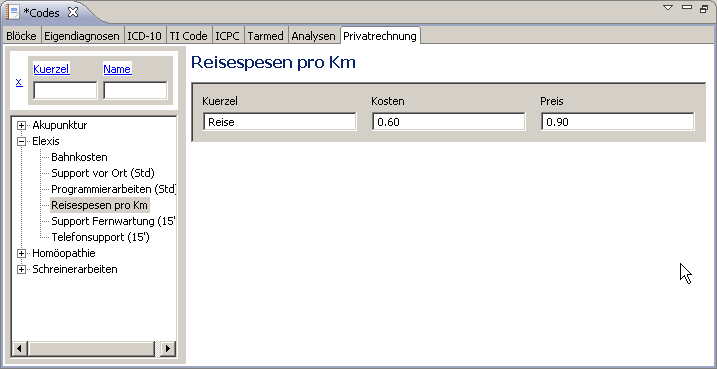
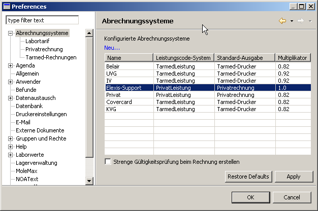
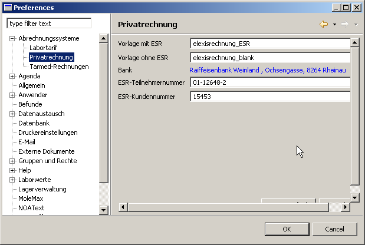

Ch.elexis.privatrechnung.feature.feature.group
| Version: | 3.0 |
| Kategorie: | Dokumentenverwaltung |
| Beschreibung: | |
| Author: | |
| Letzte Bearbeitung: | 21. Juni 2014 |
| Voraussetzungen: | Elexis 3.0 |
| Betriebssystem: | Windows, Mac, Linux |
| Lizenz: | Eclipse Public License (EPL) |
Contents
Einführung
Dieses Plugin ermöglicht die Entwicklung und Einbindung von eigenen bzw. nicht als eigene Plugins erhältlichen Tarifsystemen. Das Plugin ist dabei ebwusst offen gehalten, ermöglicht also nicht nur Arztrechnungen, sondern jede Art von Dienstleistungen zu verrechnen.
Vorbereitung
Definition der Leistungen
Sie benötigen eine Tabelle, in der Sie Ihre Leistungen festgehalten haben. Dies kann eine Excel-Tabelle oder eine .csv-Datei sein. Diese muss den folgenden Aufbau haben:
- Gruppe & Kürzel & Text & Gestehungskosten & Preis & Zeitbedarf & Gültig ab & Gültig bis
Beispiel (Leistungsabrechnung Elexis-Support):
- NIL & Elexis & Elexis & 0 & 0 & 0 & 01.01.2007 & 31.12.2038
Elexis & Fern & Fernsupport & 0 & 0 & 0 & 01.01.2007 & 31.12.2038
Fern & Tel & Telefon bis 15 min. & 0 & 3000 & 15 & 01.01.2007 & 31.12.2038
Fern & Remote & Fernzugriff bis 15 min. & 10 & 3000 & 15 & 01.01.2007 & 31.12.2038
Elexis & Vor Ort & Support vor Ort Std. & 0 & 13000 & 60 & 01.01.2007 & 31.12.2038
Elexis & Prog & Programmierarbeiten Std. & 0 & 13000 & 60 & 01.01.2007 & 31.12.2038
Elexis & Fahrt & Fahrtkosten km & 80 & 90 & 1 & 01.01.2007 & 31.12.2038
Erläuterung: Der Inhalt der Tabelle wird als hierarchische bzw. baumartige Struktur (Vgl. Tessiner Code oder Tarmed) aufbereitet. Das heisst, jedes Element hat genau ein Eltern-Element und kann kein oder beliebig viele Unterelemente haben. Nur die Elemente der obersten Ebene haben kein Elternelement. Die erste Spalte der Tabelle deklariert nun das Elternelement der betreffenden Leistung. NIL bedeutet, dass dieses Element zur obersten Ebene gehört. Ansonsten können die Bezeichnungen frei gewählt werden.
Import
Die so erstellte Tabelle kann nun nach Elexis importiert werden: Sofern das Privatrechnung-Plugin installiert ist, erscheint in der ‘Codes’ View (in der Perspektive ‘Leistungen’) die entsprechende Seite ‘Privatrechnung’ (S. Abb [fig:privatrechnung1].  [fig:privatrechnung1] Wenn Sie im ViewMenu (Dreieck rechts oben) auf ‘Import’ Klicken, können Sie die csv- oder xls-Tabelle mit Ihrem Codesystem einlesen. 1 Danach stehen Ihnen Ihre selbstdefinierten Leistungen wie jedes andere Leistungssystem zur Verfügung.
Abrechnungssystem
Oft werden Sie für Ihr eigenes Codesystem auch ein eignes Abrechnungssystem benötigen. (Wenn Sie Rechnungen beispielsweise nicht als Tarmed-Rechnungen, sondern mit selbstdefinierten Rechnungsformularen ausdrucken wollen). Hierzu definieren Sie ein neues Abrechnungssystem mit dem gewünschten Namen (S. Abb. [fig:privatrechnung2])

[fig:privatrechnung2]
Falls Sie selbstdefinierte Rechnungsformulare verwenden wollen, müssen Sie ausserdem noch festlegen, welche Formatvorlagen für diese Rechnungsformulare vorgegeben sind (s. Abb [fig:privatrechnung3]) und welche Daten für die Einzahlungsscheine notwendig sind.

[fig:privatrechnung3]
Druckformatvorlagen
Schliesslich müssen noch die Vorlagen für die eigenen Rechnungen erstellt werden. Dies können beliebige OpenOffice-Dokumente sein, welche lediglich an einer Stelle den Platzhalter [Leistungen] enthalten müssen. Es wird eine Vorlage für das Blatt mit dem Einzahlungsschein und eine für das Blatt mit der detaillierten Leistungsauflistung benötigt. Bei letzterer werden die Leistungen als
zahl<Tab>Text<Tab>Einzelpreis<Tab>Zeilenpreis
aufgelistet. Sie können die Darstellung also durch Plazierung der Tabulatoren in der Vorlage beeinflussen. 0.5
0.5
Anwendung
Sobald diese Konfigurationsarbeiten einmal erledigt sind, ist die Anwendung einfach: Erstellen Sie für den betreffenden Kunden ein Fall, wählen Sie für diesen Fall das vorhin definierte Leistungssystem aus und verrechnen Sie die Konsultationen dieses Falls mit Ihren Privatleistungen. Das Erstellen der Rechnungen geht wie gewohnt; beim Ausdruck wählen Sie entweder ‘Privatrechnung auf Drucker’ oder ‘Fall-Standardausgabe’. Mit letzterer Methode können Sie auch gemischt Rechnungen verschiedener Abrechnungssysteme mit den jeweils richtigen Formularen ausdrucken. 1 Änderungen der Preise etc. können Sie nachträglich auch direkt in der codes-View vornehmen.